Xi WangPostdoctoral Fellow
Rm 1024, Ho Sin-Hang Engineering Building 

|
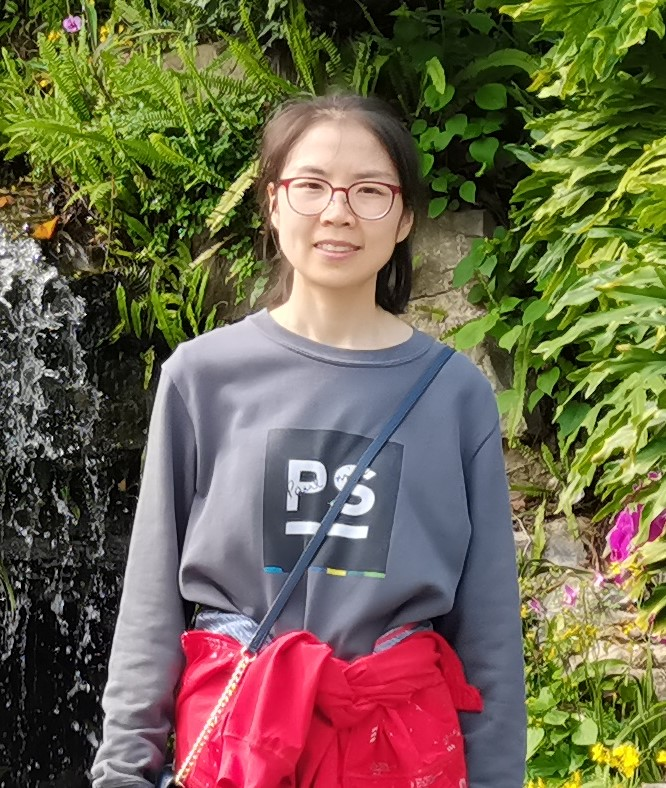 |
Biography
I am currently a post-doctoral fellow in the Department Computer Science and Engineering (CSE), The Chinese University of Hong Kong (CUHK). Before that, I worked as a post-doctoral fellow with Prof. Ruijiang Li at Stanford University and with Prof. HENG Pheng-Ann at CUHK, respectivaly. I received my Ph.D. degree in Computer Science and Engineering from CUHK in 2020, supervised by Prof. HENG Pheng-Ann and Prof. WONG, Tien-Tsin. Previously, I received her M.Sc. degree in Computer Science and Technology from Sichuan University in 2016, supervised by Prof. ZHANG Yi. I obtained my B.Eng. degree in Software Engineering from Southwest University in 2013.
My research interests are at the intersection of computer science, medical science, and physics, with special emphasis on deep learning, medical image analysis, and complex systems, strongly driven by the goal of improving human health. Over the past decade, I have been dedicated to developing novel deep learning approaches to streamline the workflow of clinical diagnosis, treatment planning, and prognosis for patients with chronic diseases, cancer, infectious diseases, and neurological diseases with high accuracy and efficiency at the lowest cost. I am currently working on longitudinal learning for time series data for disease progression forecasting and computational methodology related to single-cell and spatial genomics.
News
- [10/2024] One paper on semi-supervised MRI segmentation was accepted by IEEE TMI.
- [10/2024] One paper on detection and segmentation of lung tumors on CT was accepted by Radiology.
- [10/2024] Our team won the 3nd Place on MICCAI LISA Challenge.
- [07/2024] Survey on AI-based breast cancer imaging was sleceted as a featured article for IEEE RBME.
- [06/2023] One paper on diffusion model for MRI reconstruction was early accepted by MICCAI.
- [05/2023] One paper on latent diffusion model for glaucoma forecast was early accepted by MICCAI.
- [03/2024] One paper on fast outbreak sense and effective source inference via minimum observer set was accepted by IEEE/ACM Transactions on Networking.
- [03/2024] One paper on individual-centralized seeding strategy for influence maximization was accepted by Journal of the Royal Society Interface.
- [01/2024] One survey on Deep Learning in Breast Cancer Imaging was accepted by IEEE RBME.
- [11/2023] Two papers on OCT analysis was accepted by British Journal of Ophthalmology.
- [06/2023] One paper on fundus analysis for ROP was accepted by The Asia-Pacific Journal of Ophthalmology.
- [06/2023] One paper on multi-modal semi-supervised learning for cancer immunotherapy response prediction was accepted by Radiotherapy and Oncology.
- [06/2023] One paper on semi-supervised MRI segmentation was accepted by MICCAI.
- [02/2023] One paper on cancer aneuploidy prediction from WIS was accepted by IEEE JHBI.
- [07/2022] One paper on weakly multiple instance learning for OCT DME detection was accepted by MedIA.
- [03/2022] One paper on glaucoma and myopia feature detection was accepted by Frontiers in Medicine.
- [05/2021] One paper on OCT DME screening was accepted by Diabetes Care.
- [02/2021] One paper on deep semi-supervised medical image classification was accepted by MedIA.
- [01/2021] One paper on whole slide cervical image analysis was accepted by MedIA.
- [06/2020] One paper on learning imperfect multi-site ChestX-ray data was accepted by IEEE TMI.
- [03/2020] One paper on OCT glaucoma screening was accepted by MedIA. One paper on MIL for OCT classification was accepted by IEEE JBHI.
- [08/2019] One paper was accepted by The Lacent Digital Health as cover page. One paper on lung cancer WSI classification was accepted by IEEE cybernetics.
- [06/2019] Two papers were early accepted by MICCAI.
- [05/2018] One paper on weakly supervised lung cancer WSI classification was accepted by MIDL.
Selected Publications [Google Scholar]
| 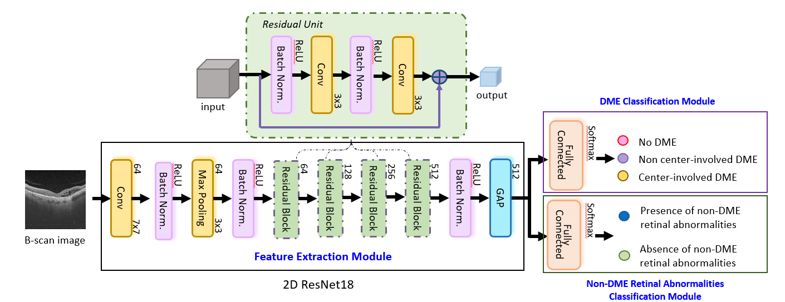 | A Multi-Task Deep-Learning System to Classify Diabetic Macular Edema for Different Optical Coherence Tomography Devices: A Multi-Center Analysis. Fangyao Tang, Xi Wang, Hao Chen, Pheng-Ann Heng, Carol Y Cheung. Diabetes Care, 2021. |
| 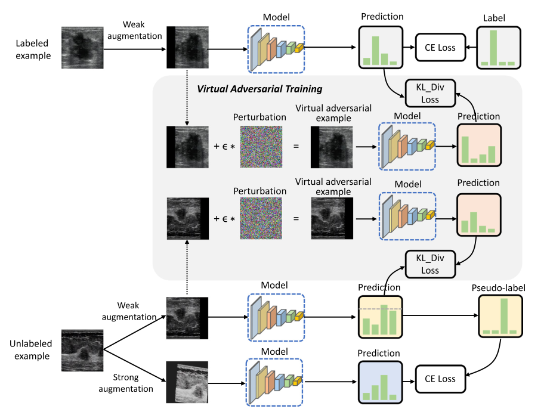 | Deep Virtual Adversarial Self-training With Consistency Regularization for Semi-supervised Medical Image Classification. Xi Wang, Hao Chen, Huiling Xiang, Huangjing Lin, Xi Lin, Pheng-Ann Heng. Medical Image Analysis (MedIA), 2021. [paper] |
| 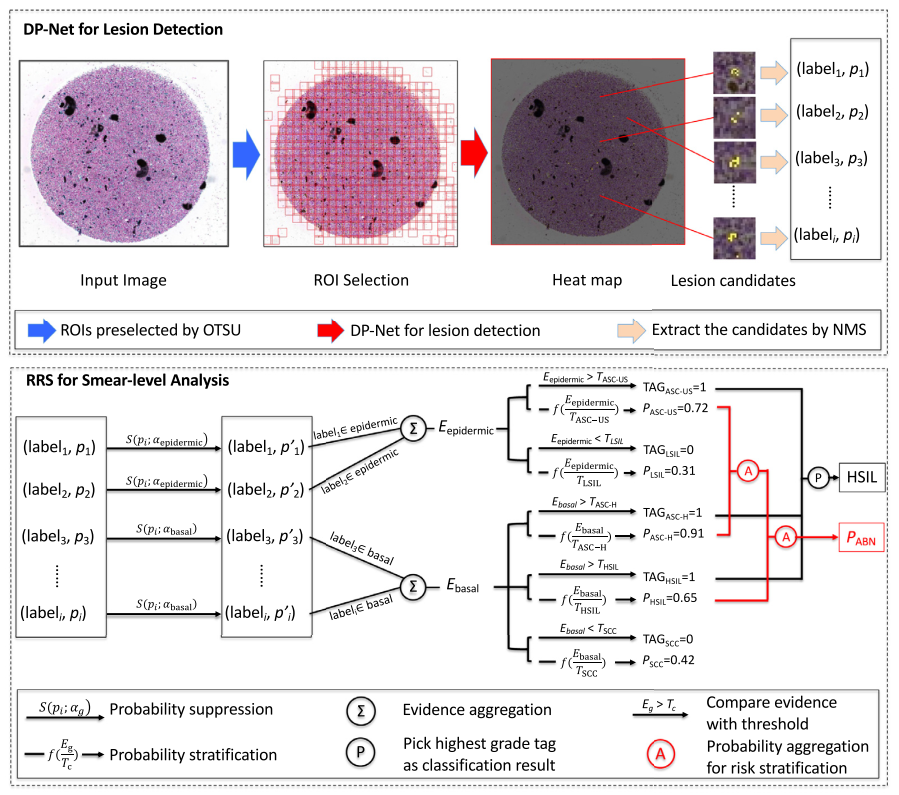 | Dual-path Network With Synergistic Grouping Loss and Evidence Driven Risk Stratification for Whole Slide Cervical Image Analysis. Huangjing Lin, Hao Chen, Xi Wang, Qiong Wang, Pheng-Ann Heng. Medical Image Analysis (MedIA), 2021. [paper] |
| 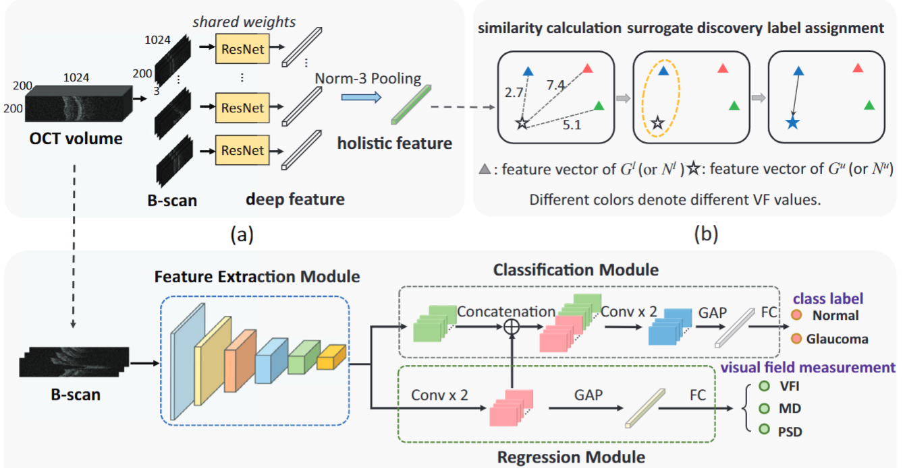 | Towards Multi-center Glaucoma OCT Image Screening With Semi-supervised Joint Structure and Function Multi-task Learning. Xi Wang, Hao Chen, An-ran Ran, Luyang Luo, Poemen P Chan, Clement C Tham, Robert T Chang, Suria S Mannil, Carol Y Cheung, Pheng-Ann Heng. Medical Image Analysis (MedIA), 2020. [paper] |
| 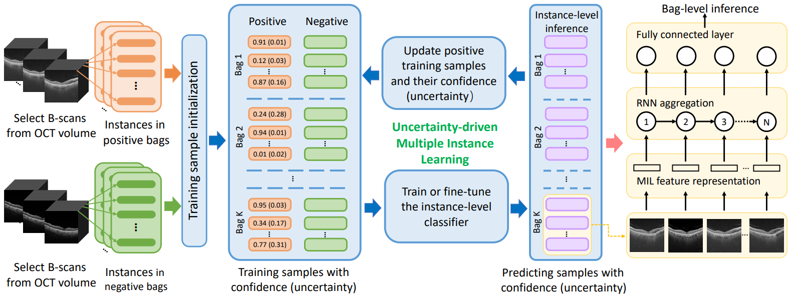 | UD-MIL: Uncertainty-driven Deep Multiple Instance Learning for OCT Image Classification. Xi Wang*, Fangyao Tang*, Hao Chen, Luyang Luo, Ziqi Tang, An-Ran Ran, Carol Y Cheung, Pheng Ann Heng. IEEE Journal of Biomedical and Health Informatics (IEEE JBHI), 2020. [paper] |
| 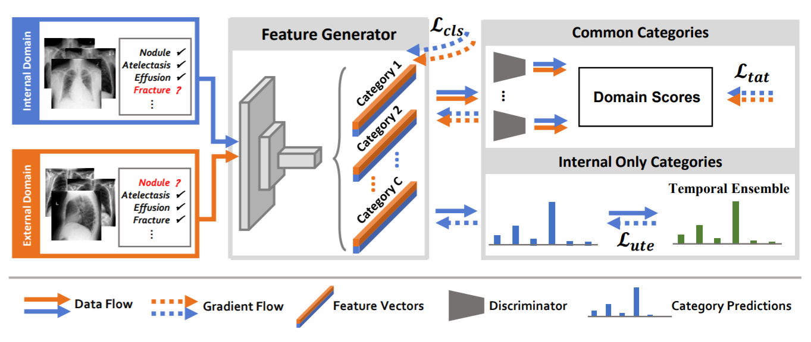 | Deep Mining External Imperfect Data for Chest X-ray Disease Screening. Luyang Luo, Lequan Yu, Hao Chen, Quande Liu, Xi Wang, Jiaqi Xu, Pheng-Ann Heng. IEEE Transactions on Medical Imaging (TMI), 2020. [paper] |
| 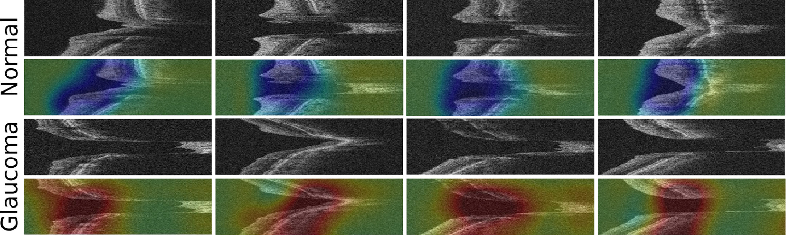 | Unifying Structure Analysis and Surrogate-driven Function Regression for Glaucoma OCT Image Screening. Xi Wang, Hao Chen, Luyang Luo, An-ran Ran, Poemen P Chan, Clement C Tham, Carol Y Cheung, Pheng-Ann Heng. Medical Image Computing and Computer Assisted Intervention (MICCAI), 2019. [paper] |
| 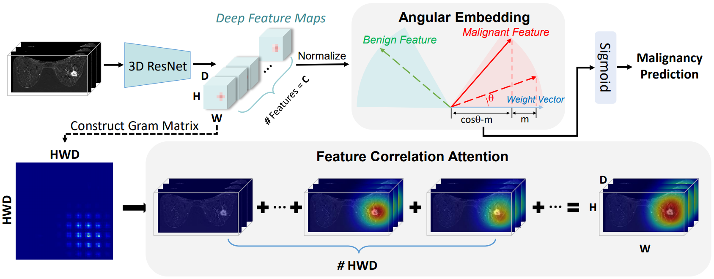 | Deep Angular Embedding and Feature Correlation Attention for Breast MRI Cancer Analysis Luyang Luo, Hao Chen, Xi Wang, Qi Dou, Huangjing Lin, Juan Zhou, Gongjie Li, Pheng-Ann Heng Medical Image Computing and Computer Assisted Intervention (MICCAI), 2019. [paper] |
| 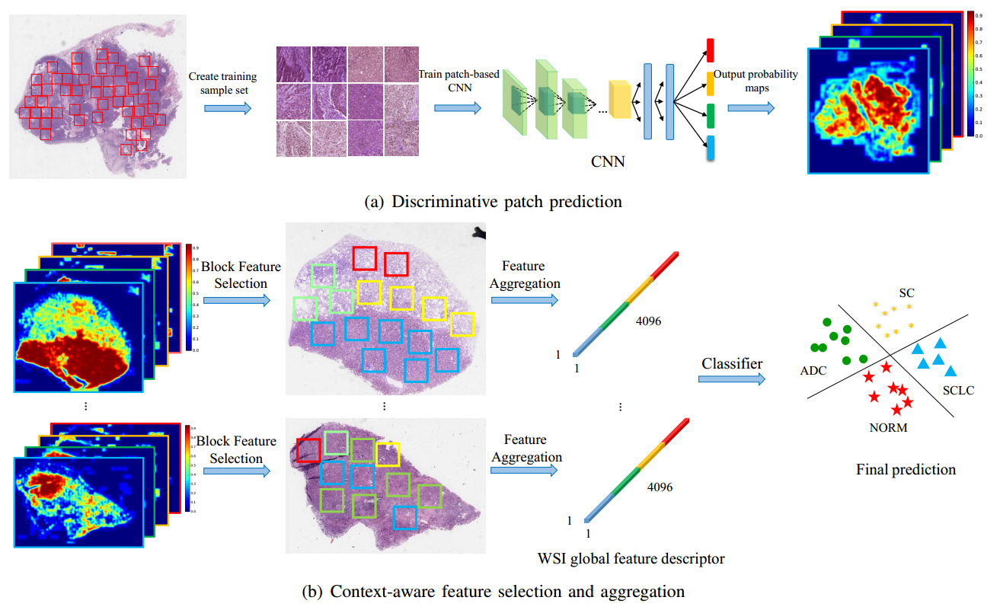 | Weakly Supervised Deep Learning for Whole Slide Lung Cancer Image Analysis. Xi Wang, Hao Chen, Caixia Gan, Huangjing Lin, Qi Dou, Efstratios Tsougenis, Qitao Huang, Muyan Cai, Pheng-Ann Heng. IEEE Transactions on Cybernetics (IEEE Cybernetics), 2019. [paper] |
| 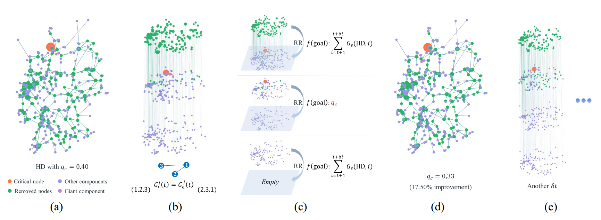 | Framework of Evolutionary Algorithm for Investigation of Influential Nodes in Complex Network Yang Liu, Xi Wang, Jürgen Kurths IEEE Transactions on Evolutionary Computation (IEEE TEC), 2019. [paper] |
| 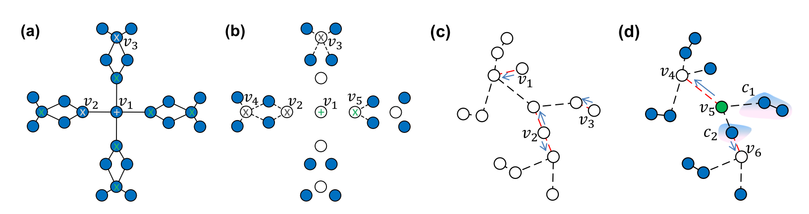 | Optimization of Targeted Node Set in Complex Networks under Percolation and Selection Yang Liu, Xi Wang, Jürgen Kurths Physical Review E (PRE), 2019. [paper] |
| 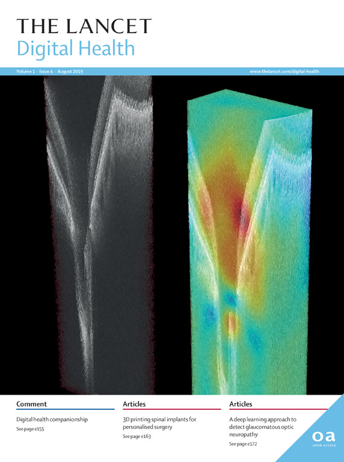 | Detection of Glaucomatous Optic Neuropathy with Spectral-domain Optical Coherence Tomography: a Retrospective Training and Validation Deep-learning Analysis. An Ran Ran, Carol Y Cheung, Xi Wang, Hao Chen, Luyang Luo, Poemen P Chan, Mandy OM Wong, Robert T Chang, Suria S Mannil, Alvin L Young, Hon-wah Yung, Chi Pui Pang, Pheng-Ann Heng, Clement C Tham. The Lancet Digital Health, 2019. |
| 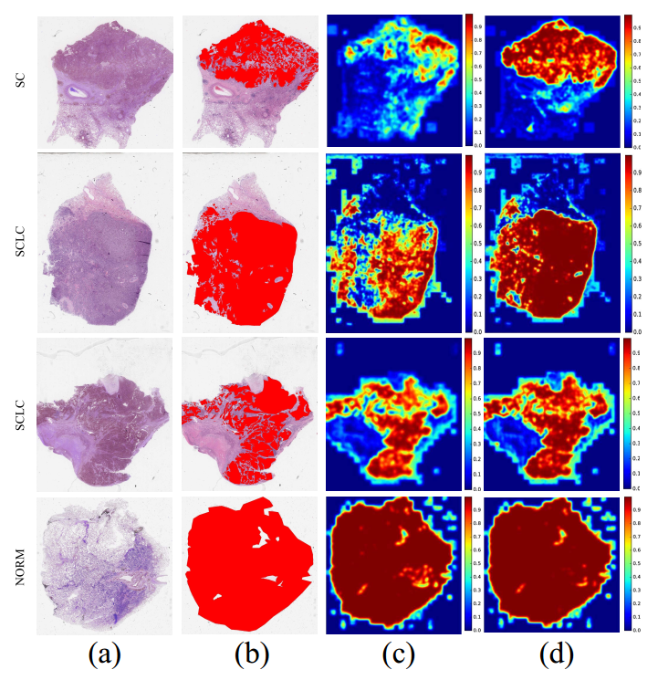 | Weakly Supervised Learning for Whole Slide Lung Cancer Image Classifcation. Xi Wang, Hao Chen, Caixia Gan, Huangjing Lin, Qi Dou, Qitao Huang, Muyan Cai, Pheng-Ann Heng. International Conference on Medical Imaging with Deep Learning (MIDL), 2018. (Oral, Student Travel Award) [paper] |
| 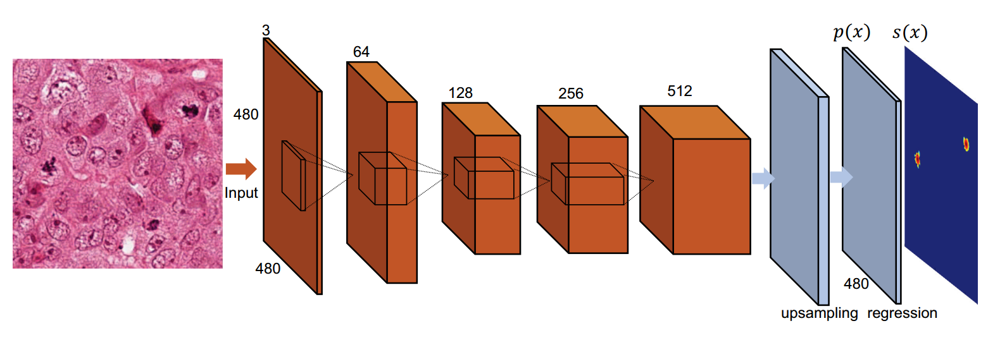 | Automated Mitosis Detection with Deep Regression Networks. Hao Chen, Xi Wang, Pheng-Ann Heng. IEEE International Symposium on Biomedical Imaging (ISBI), 2016. [paper] |
| 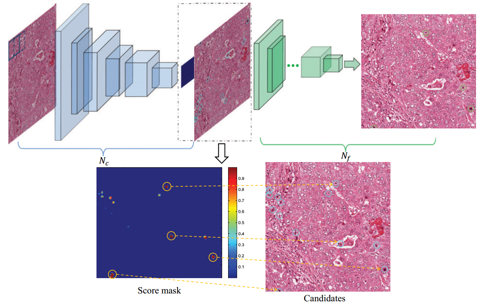 | Mitosis detection in breast cancer histology images via deep cascaded networks. Xi Wang, Hao Chen, Caixia Gan, Huangjing Lin, Qi Dou, Qitao Huang, Muyan Cai, Pheng-Ann Heng. Proceedings of the Thirtieth AAAI Conference on Artificial Intelligence (AAAI), 2016. [paper] |
| 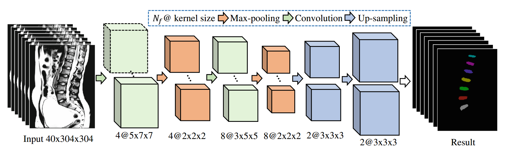 | 3D fully convolutional networks for intervertebral disc localization and segmentation. Xi Wang, Hao Chen, Caixia Gan, Huangjing Lin, Qi Dou, Qitao Huang, Muyan Cai, Pheng-Ann Heng. International Conference on Medical Imaging and Virtual Reality (MIAR), 2016. (Best Paper Award) [paper] |
Selected Awards
| Student Travel Award at the 1st APOIS Meeting, 2020 |
| 2nd Prize of Best Free Paper at the 1st APOIS Meeting, 2020 |
| Student Travel Award at the 1st MIDL Conference, 2018 |
| Champion, Intervertebral Disc (IVD) Localization from 3D MRI data, 2015 MICCAI IVD Localization Challenge. |
| Champion, Detection of Abnormalities in Gastroscopic Images in iterms of Highest Pixel Level Classification Score, 2015 MICCAI Endoscopic Vision Challenge |
| Teaching Assistant of Merit, 2018-2019 |
| Best Paper Award at MIAR, 2016 |
| National Scholarship in China, 2010,2012 |
| National Encouragement Scholarship in China, 2011 |
Professional Services
Medical Image Computing and Computer Assisted Intervention (MICCAI’20-21)
Medical Image Analysis (MedIA)
IEEE Transactions on Medical Imaging (TMI)
IEEE Transactions on Cybernetics IEEE Journal of Biomedical and Health Informatics (JBHI)
World Journal of Radiology
Frontiers Oncology
Computers & Graphics
International Journal of Intelligent Systems
Scientific Reports
Teaching
| 2018-2019 | Spring | Engineering Design |
| 2018-2019 | Fall | Engineering Design |
| 2017-2018 | Spring | Engineering Design |
| 2017-2018 | Fall | Engineering Design |
| 2016-2017 | Spring | Engineering Design |
| 2016-2017 | Fall | Java Programming |
© Xi Wang | Last updated: June 2021